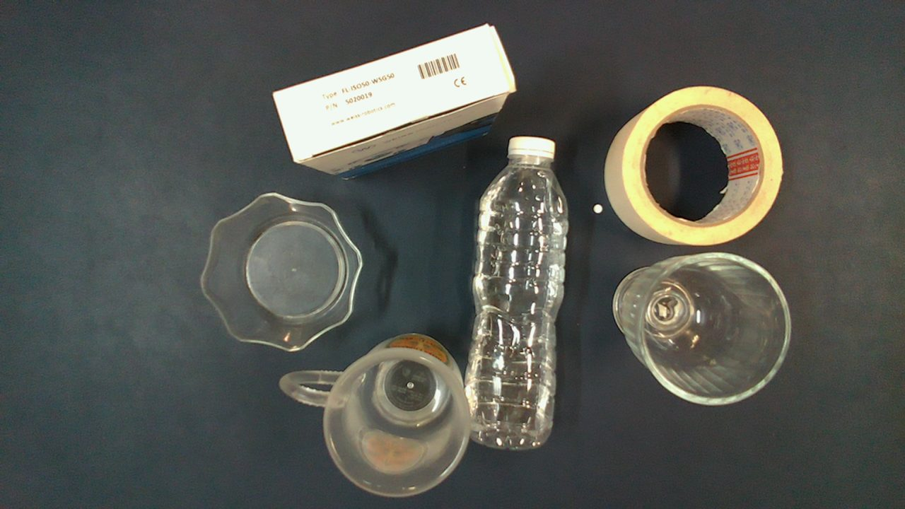
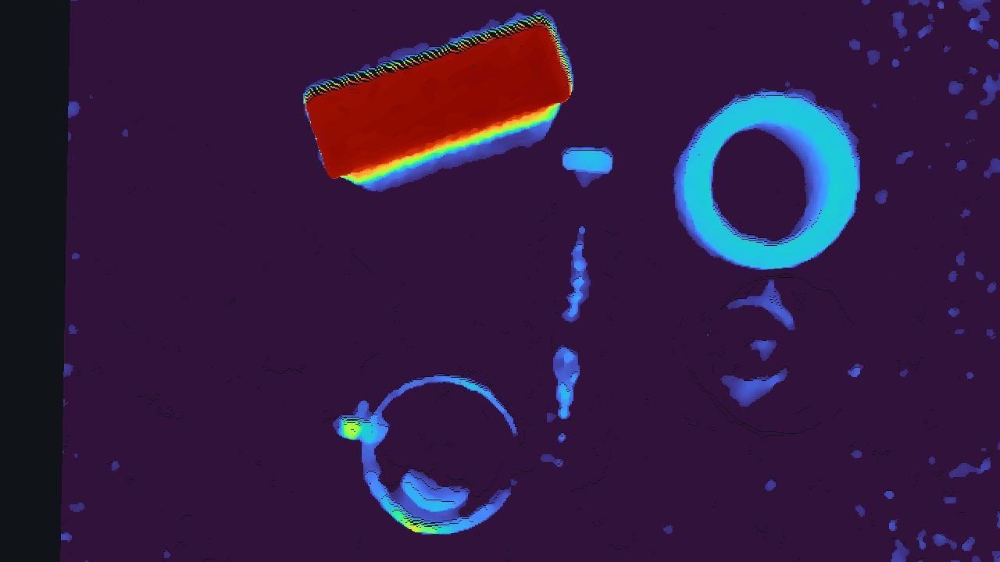
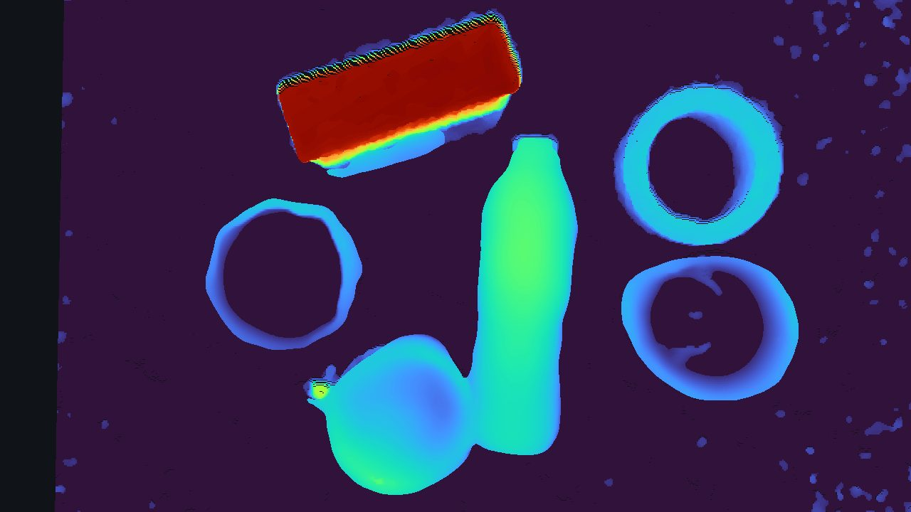
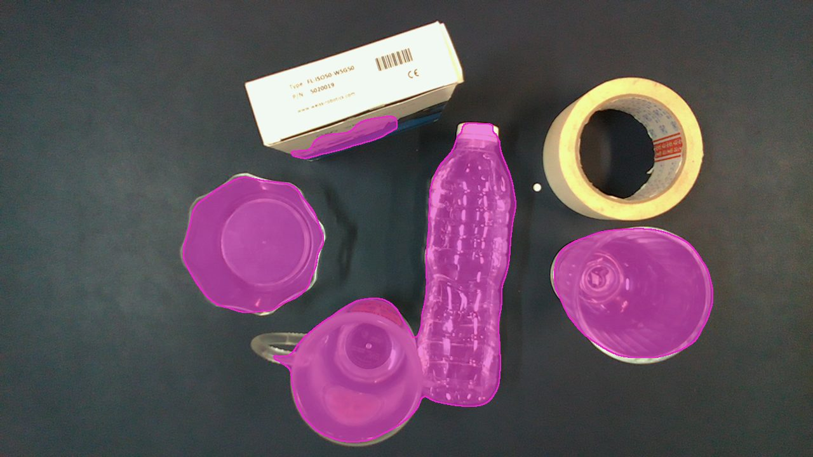
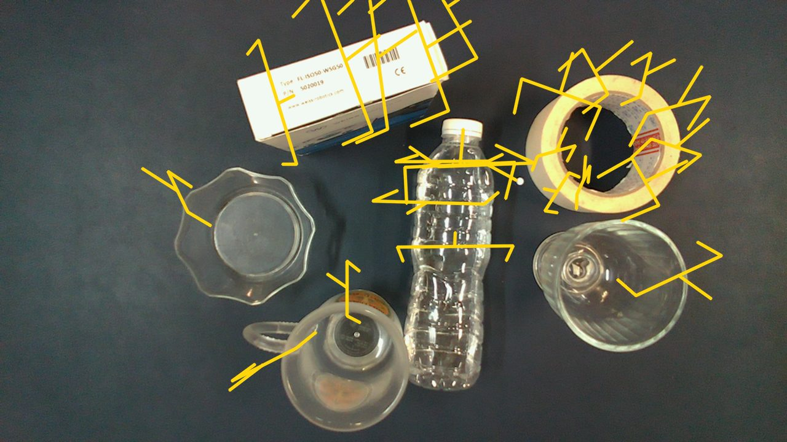
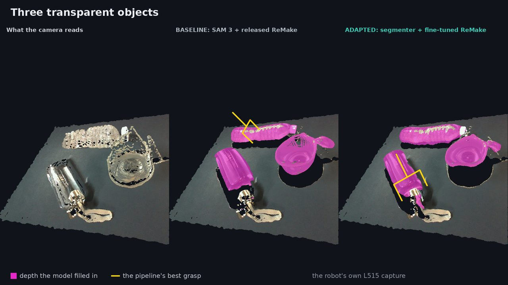
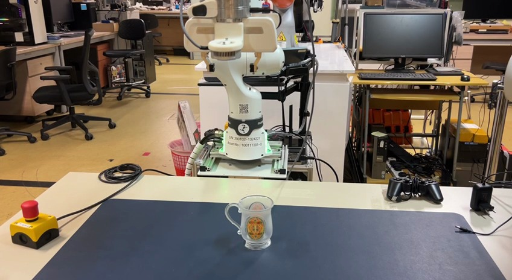
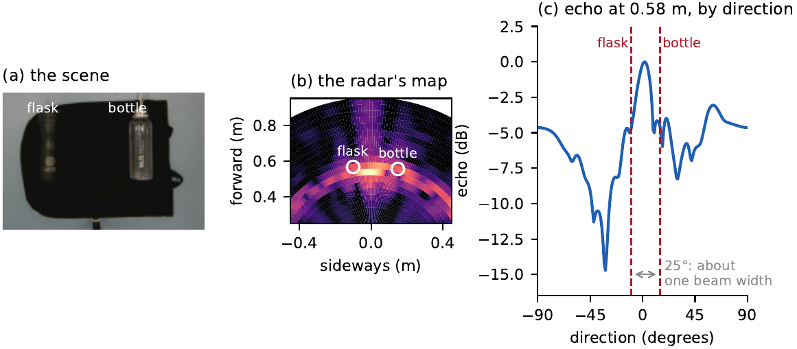

Overview
Depth cameras struggle to measure transparent objects: infrared light passes through glass and clear plastic, so the camera reports the table behind a glass instead of the glass itself. This project builds a robot that picks up transparent and opaque objects with a single Intel RealSense L515 on the gripper of a Franka Research 3 arm. A segmenter finds the transparent objects in the colour image, a depth-completion network (ReMake) repairs their depth, and the arm grasps using the repaired depth. All perception runs on an NVIDIA Jetson AGX Orin.
- Repaired depth makes transparent objects graspable. In a pre-registered trial, the arm held a transparent object in 1 of 12 attempts on the camera's raw depth, and in 8 and 7 of 12 with the two depth-repair pipelines.
- A prompt-free segmenter brings the accuracy. A small head on the encoder ReMake already runs halves ReMake's error compared with SAM 3's text-prompted mask on the TransCG benchmark (14.4 against 28.9 mm).
- It all runs on the robot. From a capture to a grasp pose takes a median 4.6 s on the Orin with ADAPTED and 5.8 s with BASELINE.
- It began with radar. The project first tried a 60 GHz radar on the gripper. Measurements showed that its antenna array is too small to separate objects on a table, which led to the camera approach (the radar study).
Why transparent objects are hard
The L515 measures distance with infrared light. Glass and clear plastic let most of it through, so the camera reads the table behind them, or nothing at all. A grasp planner working on that depth sees no object to pick.
Colour image

The camera's depth

How it works
- SegmentA prompt-free segmenter finds the transparent objects in the colour image. No text prompt needed.about 0.3 s
- Repair depthReMake fills in the depth inside the mask. An opaque object keeps the camera's own measurement unless the segmenter marks part of it.about 1.2 s
- Detect graspsScale-Balanced Grasp proposes 6-DoF grasps on the repaired point cloud. Grasps that miss a target or exceed the hand's 70 mm limit are dropped.about 1.2 s
- CheckThe arm's computer tests each grasp for reach, joint limits and collisions, and picks the best feasible one.median 1.4 s
- PickA compliant controller approaches, stops on contact, closes the gripper and lifts.about 100 s a pick
The repaired depth

Camera depthRepaired depth

All images in this section and the one above are the first capture of the clearing run at the top of the page.
Robot trials
A pre-registered experiment at a top-down view with six objects, each placed alone: four transparent (a translucent mug, a plastic bottle lying flat, a plastic bowl and a glass cup) and two opaque (a tape roll and a cardboard box). Three conditions, three attempts per object and condition, 54 attempts in all. Success means the object was lifted and held for 3 s.
Transparent objects held 12 attempts each
Opaque objects held 6 attempts each
| Condition | Depth the grasps are planned on | Transparent held | Opaque held |
|---|---|---|---|
| RAW | the camera's raw depth | 1 of 12 (8 %) | 4 of 6 (67 %) |
| BASELINE | released ReMake, on SAM 3's mask from a text prompt | 8 of 12 (67 %) | 3 of 6 (50 %) |
| ADAPTED | fine-tuned ReMake, on this project's segmenter's mask | 7 of 12 (58 %) | 3 of 6 (50 %) |
Repaired depth made transparent objects graspable. The two ReMake conditions are one attempt in twelve apart, and
ADAPTED needs no text prompt. Every attempt is recorded in
trials/.
One object under each condition
Depth repair on the TransCG benchmark
ReMake's error inside transparent objects on 1,177 test frames of TransCG, every 20th (masked RMSE, lower is better), with three sources for the transparency mask it is given:
| ReMake, with this mask | Error |
|---|---|
| the dataset's own mask (how the benchmark scores it) | 11.2 mm |
| SAM 3's mask from a text prompt, "transparent object or bottle" (what a robot would have) | 28.9 mm |
| this project's segmenter (grown 5 px, as on the robot) | 14.4 mm |
- The benchmark relies on a perfect mask. With a real segmenter's mask, ReMake's error more than doubles. The prompt-free segmenter halves that error. Its mask has IoU 0.887 on TransCG against 0.377 for SAM 3, and 0.814 and 0.742 on ClearGrasp's real test and validation images, which it never saw in training.
- Training for imperfect inputs. Two training augmentations, mask dropout and blanking the sensor's depth under the mask, cut ReMake's error with no mask from 46.4 to 18.8 mm, and with no sensor depth from 25.9 to 16.2 mm. With the segmenter's mask the fine-tuned and released weights score the same (14.2 and 14.4 mm), so the segmenter brings the accuracy and the fine-tune adds robustness.
- A bug in ReMake's released training code. The depth prior is copied before the random flips, so on 75 % of training samples it shows a mirrored scene and the network learns to ignore it.
In 3D
Saved robot captures replayed through both pipelines with the repository's offline demo, which needs no camera and no robot. Load the viewer to turn the point clouds yourself.

Limitations
- One view. A side view was also planned, but a check before those trials found that the arm could reach a grasp on only one of the six objects, so the side-view trials were not run. The limit there was the arm, the grasp detector and the camera's mounting, not the depth.
- Depth is still off on real frames. On tape-measured frames from the robot, every model still places a transparent mug's rim 47 to 57 mm too low.
- Slow picks. From the run request to the grasp pose takes a median 4.6 s (ADAPTED). An executed pick, planning included, then takes about 100 s, most of it the arm's slow, compliant motion.
- One rig. The calibration values belong to this rig, and the L515 is discontinued.
Hardware

| Arm | Franka Research 3 with the Franka Hand (parallel jaw, opens to 80 mm) |
|---|---|
| Camera | Intel RealSense L515 on the gripper: depth 640×480 at 30 Hz, colour 1280×720 at 15 Hz |
| Perception | NVIDIA Jetson AGX Orin Developer Kit, ROS 2 Humble in Docker |
| Arm computer | Intel NUC, ROS 1 Noetic with a real-time kernel and libfranka |
| Training | NVIDIA RTX 3090 (24 GB) |
Before the camera: a radar study

The project began with a 60 GHz radar on the gripper. Two objects one beam width apart came back as a single echo, because the chip's 1 cm antenna array is 5 to 25 times too small to separate objects on a table. So the project moved to the camera.
Read the radar study →BibTeX
@thesis{chan_transparent_grasping,
title = {Robotic Grasping of Transparent Objects: From Radar--Camera Fusion to Learned Depth Completion},
author = {Chan, Sheng Bin},
school = {National University of Singapore},
type = {Bachelor's dissertation},
year = {2026}
}Acknowledgements
Thanks to Prof Marcelo Ang and Prof Prahlad Vadakkepat for their supervision, and to the Advanced Robotics Centre (ARC) at NUS for the RTX 3090 on which every model in this project was trained. This project builds on ReMake, Scale-Balanced Grasp, SAM 3, Depth Anything V2, PEGG-Net, and the TransCG and ClearGrasp datasets.